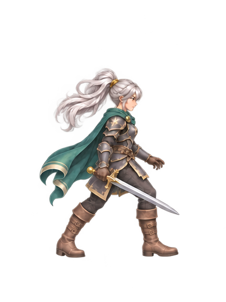
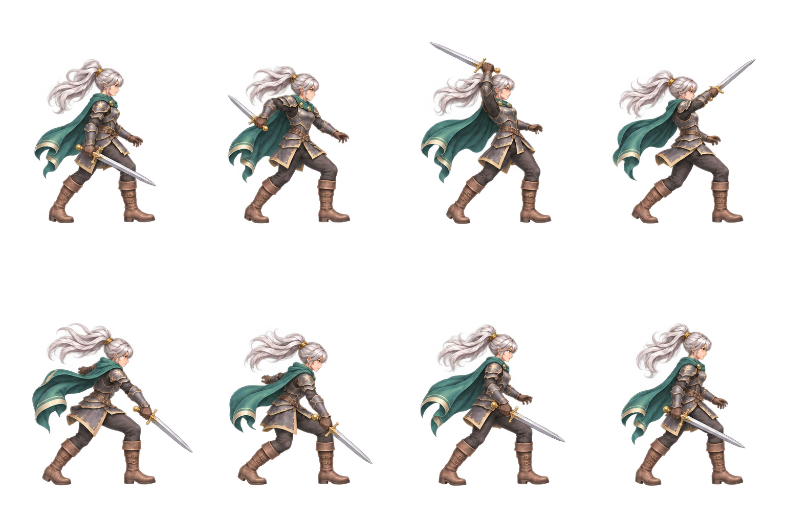

Soulbound의 검 공격 흐름을 참고한 새 8포즈. 같은 그림·같은 총시간으로 타이밍을 비교합니다.
각 포즈를 똑같이 80ms씩

검을 모으고, 빠르게 베고, 회수하기
검 든 팔의 큰 궤적, 몸통 회전, 타격 자세에서 회수까지의 흐름을 봐주세요. 두 버전 모두 동작 640ms + 대기 300ms입니다.
검수 후보입니다. 시트 경계 접촉은 없어졌지만, 일반 실루엣 검사 미달과 알파 경고가 남았습니다. 실제 게임의 피해 판정·타격 정지는 아직 연결하지 않았습니다.

검사 원문 · 타이밍 · 첫 생성 프롬프트 · 여백 보정 프롬프트
기본 GPT 이미지 생성 · 은발 v3 외형 참고 · 원본 프레임의 색과 알파 유지